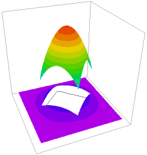

|
thermal_contact_resistance |

  
|
|
thermal_contact_resistance |
|
{ THERMAL_CONTACT_RESISTANCE.PDE
This sample demonstrates the application of FlexPDE to heatflow
problems with contact resistance between materials.
We define a square region of material with a conductivity of 5.
Imbedded in this square is a diamond-shaped region of material with a
uniform heat source of 1, and a conductivity of 1.
There is a contact resistance of 1/2 unit between the materials.
Contact resistance is modeled using the keywords JUMP and CONTACT.
JUMP represents the "jump" in the value of a variable across an interface
(outer value minus inner value, as seen from each cell),
and is meaningful only in boundary condition statements.
CONTACT is a special form of NATURAL, which requests that the boundary
should support a discontinuous value of the variable.
The model is one of "contact resistance", where the flux across an interface
is given by flux(Temp) = -Jump(Temp)/R,
and R is the contact resistance.
Since CONTACT, like NATURAL, represents the outward normal component
of the argument of the divergence operator, the contact resistance condition is
represented as
CONTACT(Temp) = -JUMP(Temp)/R
}
title "Thermal Contact Resistance"
variables Temp
definitions { thermal conductivity - values given in regions: } K Heat { Heat source } Flux = -K*grad(Temp) Rc = 1/2 { contact resistance }
initial values Temp = 0
equations Temp: div(Flux) = Heat
boundaries Region 1 { the outer boundary } K=5 Heat=0 start "Outer" (0,0) value(Temp)=0 { cold boundary } line to (3,0) to (3,3) to (0,3) to close
|
 |
Region 2 { an imbedded diamond }
K=1
Heat=1 { heat source in the inner diamond }
start "Inner" (1.5,0.5)
contact(Temp) = -JUMP(Temp)/Rc { the contact flux }
line to (2.5,1.5) to (1.5,2.5) to (0.5,1.5) to close
monitors
contour(Temp)
plots
grid(x,y)
contour(Temp) as "Temperature"
contour(magnitude(grad(temp))) points=5 as "Flux"
contour(Temp) zoom(2,1,1,1) as "Temperature Zoom"
elevation(Temp) from (0,0) to (3,3)
surface(Temp)
surface(Temp) zoom(2,1,1,1)
vector(-dx(Temp),-dy(Temp)) as "Heat Flow"
elevation(normal(flux)) on "Outer"
elevation(normal(flux)) on "Inner"
end
Page url: index.html?usage_discontinuous_variables_thermal_contact_resistance.html